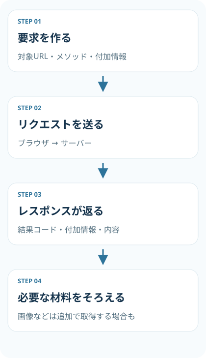

Webページのリンクを押すと、文字や写真が届きます。相手が違うサイトでも、ブラウザでページを読めるのはなぜでしょう。そのやり取りで使われる約束の一つがHTTPです。今回は、ページを求めるときに何を伝え、相手がどう返事をするのかを順に見てみます。
01 — DIGITAL BASICS
HTTPは、Webの要求と応答のルール
HTTPはHypertext Transfer Protocolの略で、Webで情報をやり取りするための通信規約です。プロトコルという言葉も、ここでは通信の約束事という意味です。ブラウザなどのクライアントがリクエストを送り、サーバーがレスポンスを返す、という形を基本にしています。
HTTPは、ネットワークの線や電波そのものではありません。届ける仕組みの上で、何を求めてどの結果を返すかを決めます。宅配で考えるなら運ぶ道と注文内容は違う、というイメージです。図は通信の意味を示すための簡略図で、すべての機器や処理を描いてはいません。
この節の参考：資料1
02 — DIGITAL BASICS
リクエストは、何をしたいかを伝える
リクエストでは、対象の情報や、どんな操作をしたいかを伝えます。操作の種類を表すものをメソッドと呼びます。GETは情報の表現を取得するために使われ、POSTは送った内容を対象の処理に渡すためなどに使われます。サイトのフォーム送信でPOSTが登場するのは、その一例です。
さらに、ヘッダーという付加情報で、扱えるデータ形式などを伝えられます。要求によっては本文もあり、フォームの入力などを運びます。ただし、POSTなら自動的に暗号化されるわけではありません。通信を保護するかどうかはHTTPSのような別の仕組みに関わります。
この節の参考：資料1

03 — DIGITAL BASICS
レスポンスは、結果と内容を返す
サーバーの返事にはステータスコードが含まれます。200は要求が成功したこと、404は対象の情報が見つからないことなどを表します。301のように別のURLへの移動に関係するコードもあります。数字はページの点数ではなく、通信や処理の結果を伝えるためのものです。
返事のヘッダーには、内容の形式などの付加情報が入り、本文としてHTMLや画像などが届く場合があります。すべての返事に本文があるとは限りません。たとえば「結果を知らせること」と「画面の材料を送ること」は、区別できる役割です。
この節の参考：資料1
04 — DIGITAL BASICS
一つのページでも、やり取りは一度とは限らない
ブラウザが最初のHTMLを読むと、そこに指定されたCSSや画像なども必要になります。追加のリクエストでそれらを取りに行き、受け取った情報を組み合わせて画面を作ります。画面上では一枚のページでも、裏側では複数の情報を扱っているのです。
そのため、文章は見えるのに写真が出ないことや、ページの一部分だけ更新されることも考えられます。原因は場合によりますが、「ページを開く」という操作を一つの巨大なデータの受け渡しとだけ捉えないと、表示の仕組みを理解しやすくなります。
この節の参考：資料2
REMEMBER
今日覚えておきたい3つのこと
- 01
HTTPは、Webで要求と応答をやり取りするルール。
- 02
リクエストは対象と操作を、レスポンスは結果や内容を伝える。
- 03
一つのページを作るために、複数の情報を取りに行くことがある。
参考資料・情報確認日
情報確認日：2026年11月23日。通信の基本を理解するために一部を簡略化しています。